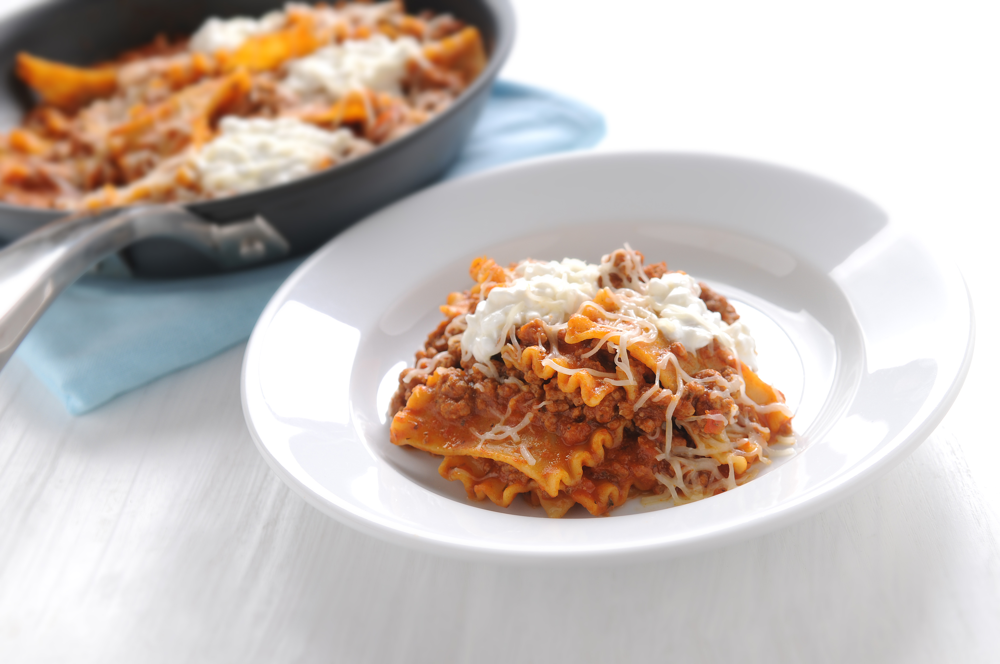

Lasagna

Description
Italian Skillet Lasagna saves time by combining all the traditional lasagna ingredients in one pan for easy preparation.
Ingredient
- 1 pound ground beef
- 1 small onion, chopped (optional)
- 1 cup water
- 1 jar (24 ounces) pasta sauce
- 10 whole pieces Mueller's® Lasagna, broken into 1-inch pieces
- 1 cup ricotta cheese
- 1 cup shredded Italian blend cheese
Steps
- Cook ground beef and onion in a large skillet over medium-high heat, stirring frequently, until meat is cooked thoroughly. (If using higher fat ground beef you may want to drain.)
- Add water, pasta sauce and uncooked lasagna to skillet. Cover and bring to a simmer. Maintain a simmer over medium-low heat for 15 to 20 minutes, stirring every 5 minutes.
- Drop spoonfuls of ricotta cheese over pasta mixture and sprinkle shredded cheese on top. Remove from heat, cover and allow to stand for three minutes or until cheese is melted.
Return to main page